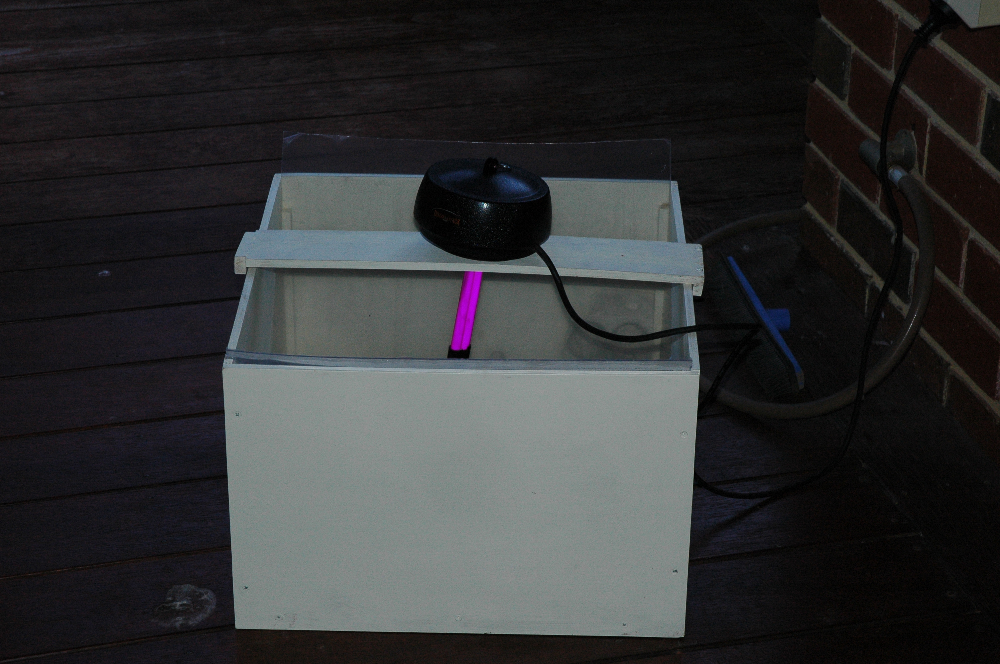

Moths
By Daneelium & platy11
Hypothesis
We are attempting to catch moths and gather data about different moths with different traps.

This is the moth trap we made

This is the moth trap Daneel's grandfather made
How do the moth traps work?
- The moths are attracted to the
light/UV light
- The moths fly towards the light and once they hit it they
faint because they do not expect to hit what they thought to be 'the Moon'
- The moths fall down onto the angled sheets of plastic
and they fall through the gap into the body of the trap
- The moths try and fail to find a way out so they rest in
the egg cartons
- We built some moth traps with perspex/corrugated plastic sheets and the lights to
attract the moths
- We put cut-up egg cartons in the traps for the moths to sit on
- We left the traps on overnight and photographed and documented any moths we found
Basic findings
- We were not as succsessful on colder nights below 7-8°
- Our best findings were with the moth trap Daneel's grandfather made
This is one of the moths that we caught
We
caught
many
diferent
types
of
moths
- We only caught moths on warmer nights
- The moths preferred the UV lights
- We caught a wide variety of moths - usually only brown moths but Daneel ended up
catching a green moth that flew away very quckly.
- Many of the moths flew away quickly after the trap was opened in the morning